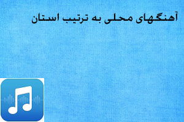
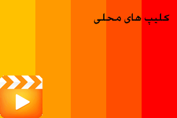
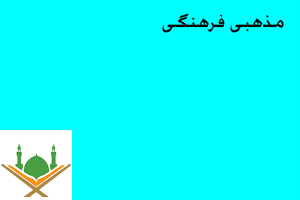
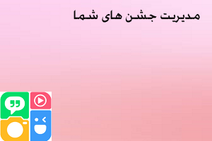
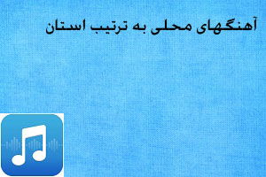
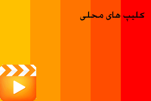
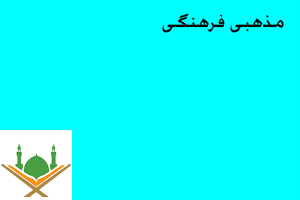
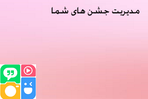

دومادی اپلیکیشنی شاد و متفاوت
با سلام به شکرانه خداوند متعال و باتلاش تیم بالاخره اولین نسخه اپلیکیشن دومادی آماده و به مرحله استفاده گردید دومادی چیست؟ برنامه ایی که همه خوانندگان و موسیقی دانان محلی کل کشور عزیزمان ایران میتوانند در آن آثار خود را ثبت و هم میهنان دیگر ما از آن استفاده نمایند این برنامه برای هنرمندانی ساخته شده که با وجود استعداد بالا کمتر کسی از آنها اطلاعی دارن و یا آثارشون رو دیدن توضیحی در مورد قسمت های برنامه: قسمت آهنگها به ترتیب استان ها که شما میتوانید با ورود به این قسمت تصویر زیر  و وارد شهر مربوطه خود شوید و خوانندگان و اهل موسیقی شهر خود را بشناسید وآثار و اهنگ ها رو گوش و دانلود ویا اشتراک گذاری کنید و یا وارد صفحه هات اجتماعی این عزیزان بروید و در صورت لزوم با آنها تماس بگیرید قسمت کلیپ ها که میتوانید کلیپ های زیبا مربوط به موسیقی را از این قسمت مشاهد نمایید و در صورتی که خودتان کلیپی از هنر خود نیز دارید برای ما ارسال تا در برنامه گنجانده شود این قسمت در نسخه بعد فعال میگردد تصویر زیر  قسمت مذهبی فرهنگی که در این قسمت جدیدترین نوحه های مخصوص ماه محرم صفر گنجانده میشود تصویر زیر  قسمت مدیریت جشن ها که در این قسمت صاحبان مشاغل مربوطه که مشخص گردیده میتوانند شغل خود را به رایگان ثبت و کاربران نیز برای مدیریت بهتر و صرفه جویی در هزینه ها و وقت از آن استفاده نمایند بدون شک یکی از بهترین آیتم های این برنامه این گزینه میباشدکه شما میتوانید شغل تان را به شهر خودتان ویا استان مربوطه و یا و کل کشور معرفی نمایید و کسب درآمد نمایید تصویرهای زیر مربوط به قسمت ثبت شغل یا همان مدیریت جشن های شما میباشد  قسمت ارتباط با ما چنانچه شما در یک زمینه موسیقی استعداد دارین میتوانید با ارسال آثار خود ما اثار شما را در برنامه بصورت رایگان گنجانده شود منتظر خبرهای خوب در نسخه های بعدی باشید موفق باشید

و وارد شهر مربوطه خود شوید و خوانندگان و اهل موسیقی شهر خود را بشناسید وآثار و اهنگ ها رو گوش و دانلود ویا اشتراک گذاری کنید و یا وارد صفحه هات اجتماعی این عزیزان بروید و در صورت لزوم با آنها تماس بگیرید قسمت کلیپ ها که میتوانید کلیپ های زیبا مربوط به موسیقی را از این قسمت مشاهد نمایید و در صورتی که خودتان کلیپی از هنر خود نیز دارید برای ما ارسال تا در برنامه گنجانده شود این قسمت در نسخه بعد فعال میگردد تصویر زیر

قسمت مذهبی فرهنگی که در این قسمت جدیدترین نوحه های مخصوص ماه محرم صفر گنجانده میشود تصویر زیر

قسمت مدیریت جشن ها که در این قسمت صاحبان مشاغل مربوطه که مشخص گردیده میتوانند شغل خود را به رایگان ثبت و کاربران نیز برای مدیریت بهتر و صرفه جویی در هزینه ها و وقت از آن استفاده نمایند بدون شک یکی از بهترین آیتم های این برنامه این گزینه میباشدکه شما میتوانید شغل تان را به شهر خودتان ویا استان مربوطه و یا و کل کشور معرفی نمایید و کسب درآمد نمایید تصویرهای زیر مربوط به قسمت ثبت شغل یا همان مدیریت جشن های شما میباشد

قسمت ارتباط با ما چنانچه شما در یک زمینه موسیقی استعداد دارین میتوانید با ارسال آثار خود ما اثار شما را در برنامه بصورت رایگان گنجانده شود
منتظر خبرهای خوب در نسخه های بعدی باشید موفق باشید